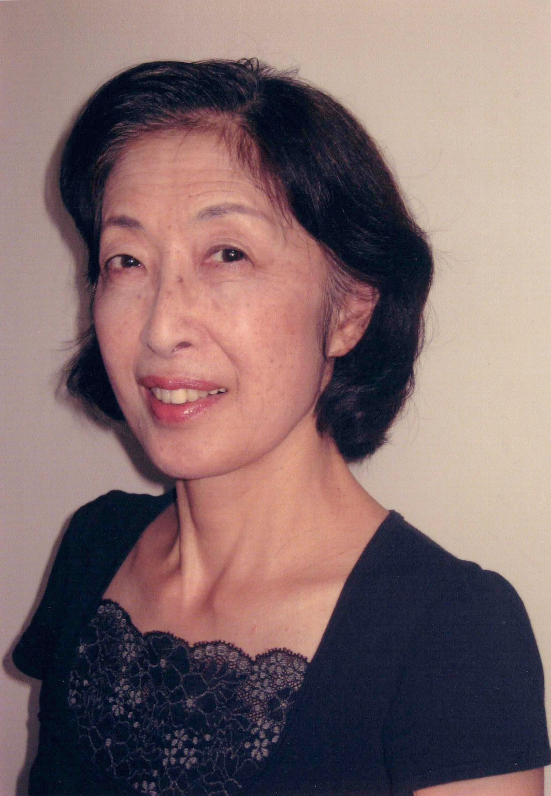
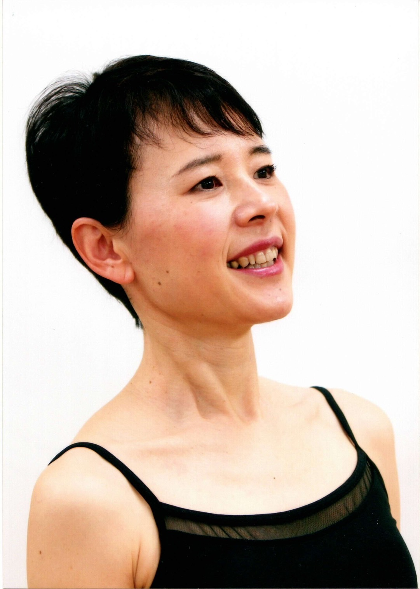
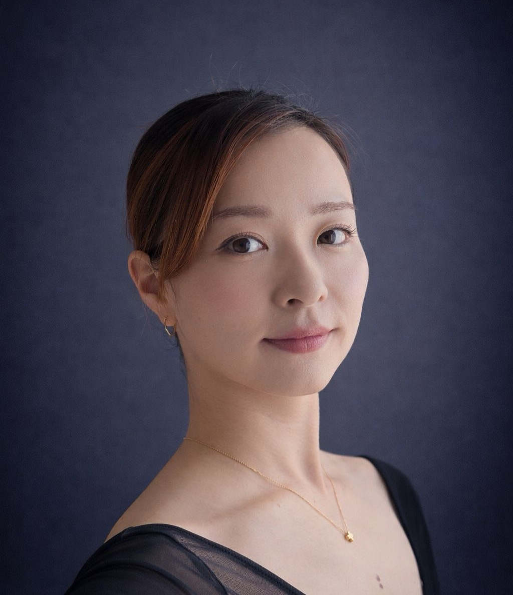

スワンバレエスタジオ
Swan Ballet
ホーム
講師紹介
スケジュール
料金
アクセス
フォトギャラリー
ホーム
講師紹介
スケジュール
料金
アクセス
フォトギャラリー
講師紹介
鈴木 美也子 (主宰講師)
プロフィール
9歳より西内敏子バレエ研究所にてバレエを始める
その後、法村友井バレエ学校ジュニア科に入校、同バレエ団に入団
友井唯紀子、友井櫻子、法村牧緒先生に師事、大阪YMCA等で講師
1991年当地白井にてスワンバレエを開設、山路瑠美子先生に師事
2004年専用スタジオ開設、スワンバレエスタジオとして現在に至る
村田 圭子

チャイコフスキー記念バレエ団を経て､山路瑠美子研究所に入所
山路バレエの発表会にソリストとして出演
2017年よりスワンバレエスタジオで、教師を勤める
佐伯 響子

クラシックバレエを山路瑠美子に師事
埼玉舞踊コンクールシニア部門東京新聞社賞
バー､アスティエ指導法をアラン､アスティエ､坂東祐子より学ぶ
ストレッチングミューズ主宰
スワンバレエスタジオの講師も勤める
石川 江美

4歳より地元静岡にてバレエを始める
2003年、カンヌ・ロゼラ・ハイタワー・バレエスクールへ短期留学
2008年、フランス留学中にAcadémie de Ballet Nini Theilade に所属し、Marie-Danielle Grimaud 先生に師事
Théïlaila Stage International にも参加
発表会やコンクールなど多数の舞台経験を積む
2014年、スワンバレエスタジオに入会し、鈴木美也子先生より指導を受けている
田中 千紘
5歳より鈴木美也子先生のもとスワンバレエスタジオにてクラシックバレエを始める
19歳迄多数の発表会に出演し、ソリストとして踊る
2016年より同スタジオにてバレエを再開
現在スワンバレエスタジオにて後進の指導にあたる